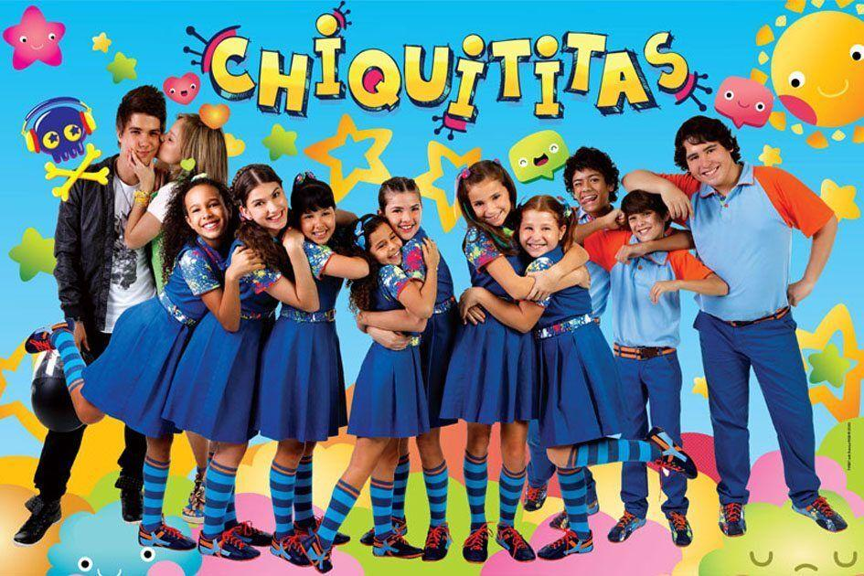
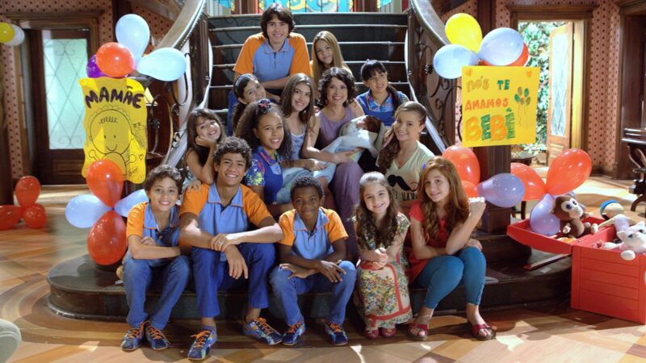

Chiquititas gira em torno da rotina e dos dramas das crianças e adolescentes que moram no Orfanato Raio de Luz.
A história é marcada pela busca por união, amor e identidade, enquanto os órfãos enfrentam coisas do passado Em um período anterior à novela, exatos treze anos, sua filha Gabriela se apaixonou e ficou grávida de Miguel, filho de Valentina, empregada da casa dos Almeida Campos. Pouco depois, José Ricardo sequestrou sua neta, pois ele não aceitava que sua filha se envolvesse com um empregado. Como sua neta, Milena, apelidada como Mili, precisava de um lugar para morar, ele comprou um casarão e fundou um orfanato, o Raio de Luz. Mili cresceu lá com outras garotas que chegaram posteriormente: Bia, Ana, as irmãs Tati e Vivi, e Cris. Ao decorrer dos anos, elas se tornam uma família. Elas são supervisionadas por Ernestina, a rígida zeladora do orfanato, e Chico, o cozinheiro amado pelas internas. Sofia, ex-governanta da família Almeida Campos, é a diretora do lugar, até que ela fica muito doente e um dia acaba não resistindo, e então Carmem, irmã de José Ricardo, entre em seu lugar.
Enquanto a diretora Carolina (Carol) era a figura materna das crianças, Chico era o porto seguro no dia a dia. Como cozinheiro do orfanato, ele não apenas alimentava os órfãos, mas também alimentava a alma deles com conselhos, paciência e muito carinho. Sempre com seu avental e um sorriso bondoso, Chico defendia as crianças das injustiças e das armações das vilãs da história. Em Chiquititas, a grande revelação acontece quando a verdade sobre o passado vem à tona: Mili (Milena) descobre que é a verdadeira filha biológica de Gabriela (Gabi) e Miguel. O pai de Gabi, Dr. José Ricardo, escondeu a neta no orfanato logo após o nascimento.